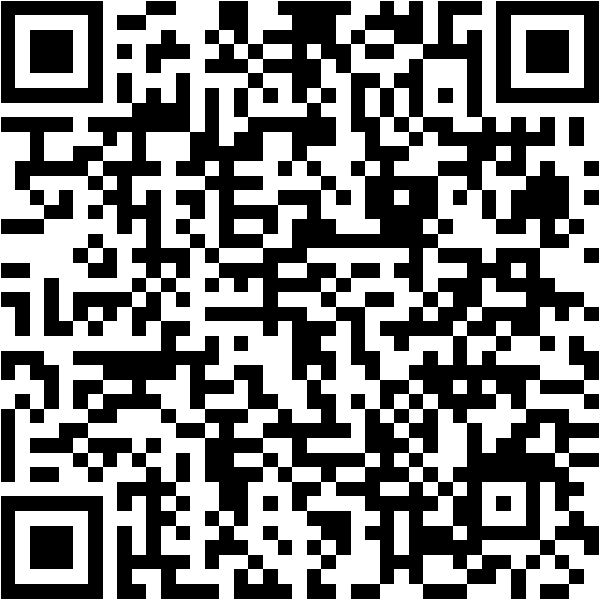
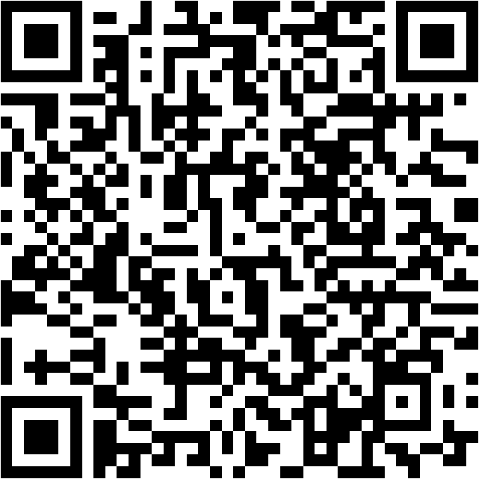

스스로 만든 질문
현장에서 확인할 수 있는 역사적 질문을 만들었는가.
프로그램 만족도 설문이 아닙니다. 학생이 어떤 질문을 만들고, 어떤 사료와 현장 증거를 사용했으며, 교과 개념을 어떻게 적용하고 생각을 수정했는지를 기록하는 탐구 증거지입니다.
관심 장소, 교과연계, 사전지식, 역사적 질문, 찾을 증거, 사료비판 계획, 역할을 미리 기록합니다.

답사 전 수업시간 또는 전날 작성.
학년·반·번호·이름, 코스와 역할, 교과연계, 사전지식, 탐구질문, 예상 증거, 사전자료 비판, 결과물 계획을 기록합니다.
관찰한 사실과 해석을 구분하고, 현장 증거·사료비판·교과 개념·생각 변화·논증·협업·후속질문을 기록합니다.

답사 당일 마무리 또는 다음 역사수업에서 작성.
현장 관찰, 탐구 질문, 증거 2개, 사료비판, 교과 개념 적용, 생각 변화, 결론, 조별 기여, 발표 주장, 후속 질문과 결과물을 기록합니다.
현장에서 확인할 수 있는 역사적 질문을 만들었는가.
자료명·출처뿐 아니라 작성 주체, 목적, 시대적 배경, 한계를 검토했는가.
건물·지형·유물·지도·사진·전시를 구체적인 근거로 사용했는가.
한국사1·한국사2 등의 개념을 실제 장소와 연결해 설명했는가.
새로운 증거를 통해 기존 생각을 수정하거나 더 복합적으로 만들었는가.
두 개 이상의 현장 증거·사료를 사용해 자신의 결론을 만들었는가.
조별 역할을 실제로 수행하고 다른 학생의 탐구에 기여했는가.
답사 뒤 더 조사하고 싶은 새로운 역사적 질문을 만들었는가.